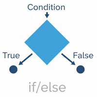

条件分岐

- プロンプト例
JavaScriptで分岐の解説をして
- 分岐とは、条件によって処理を変えることです。
- 「もし〇〇なら△△する、そうでなければ□□する」という処理を作れます。
if文（基本）
書き方
if (条件) {
処理;
}
例
let age = 20; if (age >= 18) { console.log(`成人です`); }
👉 ageが18以上なら「成人です」と表示されます。
if 〜 else（そうでなければ）
書き方
if (条件) {
処理A;
} else {
処理B;
}
例
let score = 50; if (score >= 60) { console.log(`合格`); } else { console.log(`不合格`); }
👉 60点以上 → 合格
👉 60点未満 → 不合格
if 〜 else if 〜 else（複数条件）
書き方
if (条件1) {
処理1;
} else if (条件2) {
処理2;
} else {
処理3;
}
例
let score = 85; if (score >= 90) { console.log(`A評価`); } else if (score >= 70) { console.log(`B評価`); } else { console.log(`C評価`); }
👉 90以上 → A
👉 70以上 → B
👉 それ以外 → C
switch文（値で分岐）
- 「値が何か」で分岐するときに便利です。
書き方
switch (値) {
case 値1:
処理1;
break;
case 値2:
処理2;
break;
default:
処理;
}
例
let fruit = 'りんご'; switch (fruit) { case 'りんご': console.log(`赤い果物`); break; case 'バナナ': console.log(`黄色い果物`); break; default: console.log(`その他の果物`); }
三項演算子（短く書ける分岐）
書き方
条件 ? 真の処理 : 偽の処理;
例
let age = 17; let result = age >= 18 ? '大人' : '子供'; console.log(result);
👉 シンプルな分岐に便利
比較演算子（条件でよく使う）
| 演算子 | 意味 |
|---|---|
| == | 等しい（型変換あり） |
| === | 厳密に等しい（型も一致） |
| != | 等しくない |
| !== | 厳密に等しくない |
| > | より大きい |
| < | より小さい |
| >= | 以上 |
| <= | 以下 |
⚠ JavaScriptでは === を使うのが基本です。
論理演算子（条件の組み合わせ）
| 演算子 | 意味 | 例 |
|---|---|---|
| && | かつ（AND） | A && B |
| ! | 否定（NOT） | !A |
例
let age = 20; let isStudent = true; if (age >= 18 && isStudent) { console.log(`成人学生です`); }